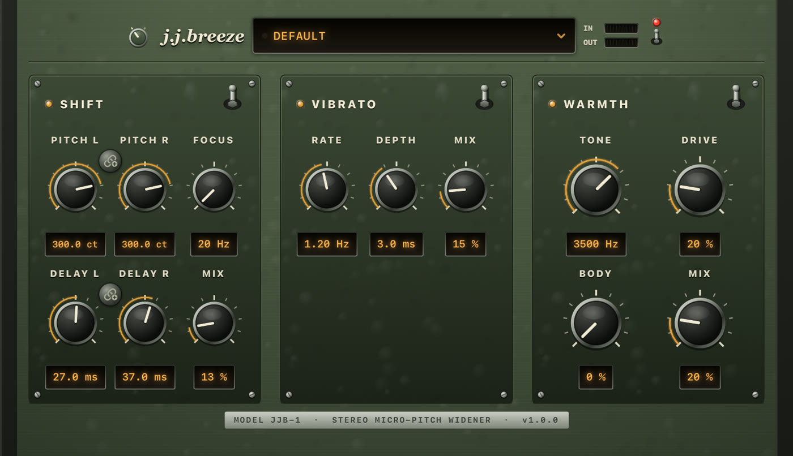
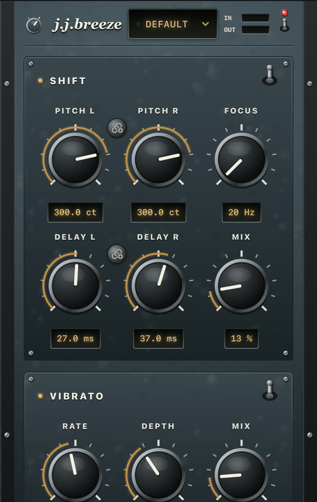
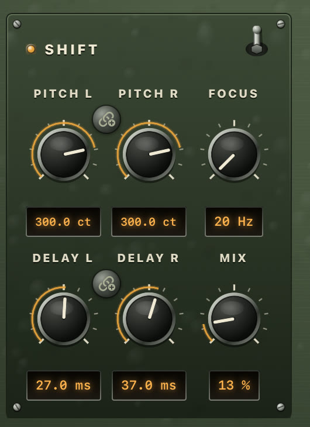

You know the one. Laid-back, a little late, never shiny. A second voice a few cents off — not a chorus, not a slap in your face. jj-breeze is the insert for that sound.

Free · 7-day trial · then $2.99 once · Open the app, tap Play, then load jj-breeze in your host
Close to the mic. A guitar in the room. A double that doesn’t announce itself. Load a preset and you’re in that neighborhood — original patches, not copies of any record.
Matching pitch, short delays, a darker top. The namesake — that unhurried doubled voice the whole plug-in is named for. Start on Default.
The same close vocal, rolled off and moving just enough. Warmth on, vibrato low and lazy. Load JJ Cajun Moon.
Left stays put. Right jumps +470 cents. Asymmetric, a little ghosted. Load JJ Lies.
jj-breeze is an original effect. Preset names point at a feel, not a recreation of any recording, and the plug-in is not affiliated with any artist, label, or third-party vendor.
The companion app is a real host, not an empty wrapper. Hear the effect before you open a DAW.
Install jj-breeze and launch it once. Leave the source on Demo Loop and tap Play. You hear the effect immediately — turn knobs, throw a section switch, load a preset.
That first launch registers the Audio Unit. In GarageBand, Logic for iPad, AUM, and other AUv3 hosts it appears as jj-breeze (manufacturer Gerov).
Each section has its own on/off. Turn Vibrato and Warmth off for a clean slap or octave; leave them on for a darker, moving vocal. Knobs stay put when a section is off.
Hammered enamel, screwed-down sub-plates, bakelite knobs in chrome collars, bat switches and smoked-glass readouts — all drawn procedurally, so it stays sharp at any size your host gives it. Tap a screenshot for a larger view.


Shift and Vibrato blend in parallel from the dry signal. Warmth is the last pass on the sum. Turning one up does not eat the others.
The core. Each side gets its own pitch and its own delay tap. Same-sign pitch stays mono-compatible. Opposite signs is classic micro-shift width. Focus is a crossover: below it stays dry; only the band above is shifted and delayed.
A slow, continuous pitch wobble from a swept short delay — not a second copy of Shift’s static detune. It runs in parallel with Shift, from dry, so Mix here never steals from Shift Mix.
The last tone stage on the fully summed signal: chest, darkness, then gentle saturation. Not another doubler. Leave it off when you want an open, twangy top.
Raise Focus to keep width off the bass. Drop it toward 20–25 Hz when a big pitch change or a slap should cover the full band. Mix only blends; Focus decides what gets processed.
On iOS, link L and R so one drag keeps the offset. Double-tap a knob for its default. Tap the LED readout to type a value. Vertical drag is coarse; horizontal is fine.
Each section has its own bat switch and indicator lamp. Throwing it bypasses that section without wiping knobs — the DSP keeps running, so switching back is click-free. The power switch in the header is a full dry bypass.
The rotary selector left of the wordmark turns the panel from Field Green to Slate — hammered military enamel or blue-grey gunmetal, with the hardware and lamp colours to match. Its cap shows the fitted finish, and your choice is remembered.
The preset window is the whole workflow: tap it for factory and user presets, Save As… to keep the current knobs, and swipe a user preset left to rename or delete it. A dot next to the name lights when you have edited a preset.
Two LED ladders in the header, green through amber into red, so you can see the effect is getting signal and what it is handing back — without leaving the plug-in window.
Same recall in the panel’s preset window and in the host. Save As… keeps your own next to the factory ones; swipe one left to rename or delete it.
The breeze: matching +300 cents, short delays, all three sections on. The easy doubled voice.
Opposite-sign pitch for a classic wide micro-shift, still with a light swirl and warmth.
The dark, rolling one. Matching pitch, lazy vibrato, Warmth on. Start here for that late vocal.
One side stays. The other lifts +470 cents. The ghost in the right channel.
Matching −300 cents, Focus down, a darker Tone and a little vibrato.
Pitch L −1200, Pitch R at 0. Reads like an octave pedal across the stereo field.
Pitch −700 cents with Body and Drive for a low, growly voice. No vibrato.
Pitch at 0, Delay 110 / 115 ms, Focus down. One bright repeat, nothing else.
Install the app, open it once, then look for jj-breeze in any AUv3 host. Type aufx, subtype Jjb3, manufacturer Grov.
Audio FX → Audio Unit Extensions → jj-breeze. Works on an Audio Recorder track or any audio track.
Audio Units → Gerov → jj-breeze. Same editor, same presets as the standalone app.
AUM, Cubasis, BeatMaker, and other AUv3 hosts list it as jj-breeze. Open the companion app once if it does not appear yet.
Close to the mic. A second voice a few cents off. Never a chorus.
iPhone and iPad · iOS 17+ · Free download, 7-day trial, then one-time unlock. No account. Open the app, tap Play, then load the same effect in your DAW.
Download on the App Store